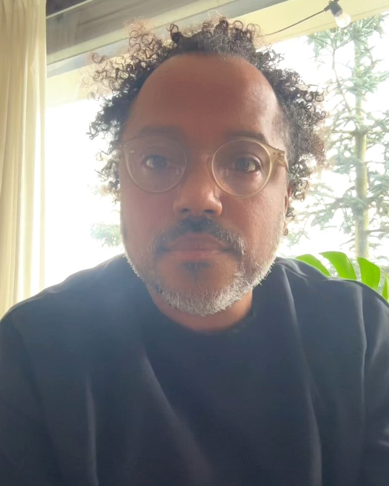
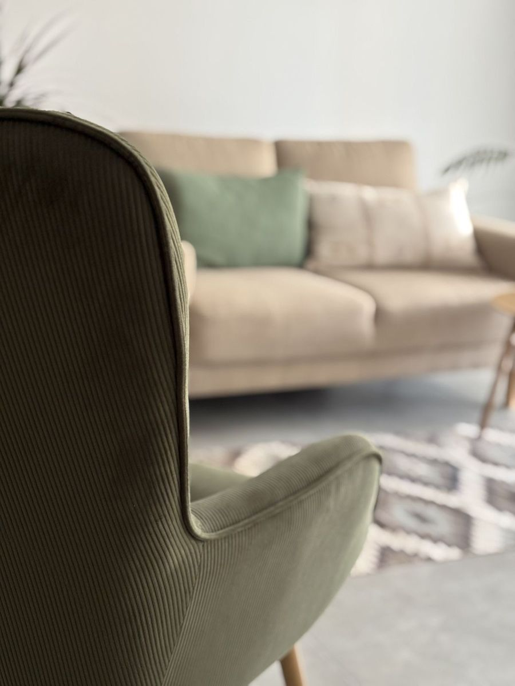

Psycholoog en psychotherapeut in Gent
Ruimte om even stil te staan
Soms loopt het leven anders dan je had verwacht. Je voelt je moe, gespannen of somber, je relatie staat onder druk, of het ouderschap vraagt meer van je dan je had gedacht. Praten met iemand buiten je eigen kring kan helpen om weer overzicht te krijgen.
Kom je zelf of via je ouders van elders, en leef je tussen twee of meer culturen? Dan hoort ook dat bij je verhaal. Ik weet uit eigen ervaring wat het betekent, en er is hier uitdrukkelijk ruimte voor.
- Meer dan twintig jaar ervaring
- Individueel en als koppel
- Nederlands en Engels

Aanbod
Waarvoor je bij mij terechtkunt
Koppels
Voor partners die vastlopen, afstand voelen of opnieuw verbinding zoeken. Ook als jullie uit elkaar gaan of al uit elkaar zijn: om afscheid te nemen als partners en samen ouder te blijven.
Volwassenen en jongvolwassenen
Begeleiding en psychotherapie bij stress, angst, somberheid, overbelasting of het gevoel vast te zitten. Ook bij de vragen en onzekerheden die horen bij volwassen worden: zelfstandig worden, relaties, wie je wilt zijn.
Ouders
Ouder zijn vraagt veel, of je kind nu een baby, een tiener of al volwassen is. Ik help moeders en vaders hun weg te vinden, met aandacht voor jou als ouder en voor de band met je kind.
Leven tussen culturen
Een migratieverhaal laat sporen na: in hoe je je voelt, in je relaties, in hoe je je kinderen opvoedt tussen twee of meer culturen. Ook bij heimwee, aanpassing of verlies kun je bij mij terecht.
Twijfel je of ik de juiste persoon ben voor jouw vraag?
Bel of mail gerust. Ik antwoord binnen twee werkdagen.
Over mij
Klachten staan zelden op zichzelf
Ik ben klinisch psycholoog en psychotherapeut, en ik werk al meer dan twintig jaar als psycholoog. Ik kijk systemisch: niet alleen naar jou, maar ook naar de mensen en omstandigheden rond je. Je partner, je kinderen, je familie en je achtergrond horen bij je verhaal.
Een groot deel van mijn werk gaat over koppels: partners die opnieuw verbinding zoeken, en partners die uit elkaar gaan en samen goed ouder willen blijven. Daarnaast begeleid ik veel ouders, met aandacht voor de band met hun kinderen, op elke leeftijd.
Een plek voor iedereen
Mijn praktijk wil een plek zijn waar je je welkom voelt, ook als je wortels elders liggen. Als kind van Afrikaanse ouders weet ik uit eigen ervaring hoe het is om op te groeien tussen verschillende culturen. Dat brengt uitdagingen mee, maar ook veel rijkdom. Die ervaring neem ik mee in mijn werk: ik luister naar jouw verhaal en jouw manier van kijken, zonder het in een vast kader te duwen.

Praktisch
Goed om te weten
Tarief
Ik werk binnen de conventie psychologische zorg in de eerste lijn. De eerste sessie is gratis. Daarna betaal je 11 euro per sessie, of 4 euro met verhoogde tegemoetkoming.
Locatie
[adres], Gent
Bereikbaar met [tram, bus, fiets].
Consultaties
Op [dagen en uren, bijvoorbeeld dinsdagavond en zaterdagvoormiddag]. Gesprekken in het Nederlands of het Engels.
Therapy in English
I am a clinical psychologist and psychotherapist in Ghent with more than twenty years of experience, trained in systemic therapy. I work with adults, young adults, couples and parents, including couples who are separating or have separated. As the child of African parents, I know from experience what it means to grow up between cultures. Whether you are new to Belgium or have lived here for years, you are welcome. Sessions are available in English and Dutch. To make an appointment, call or email me.
Contact
Een afspraak maken
Bel of mail me. Ik antwoord binnen twee werkdagen.